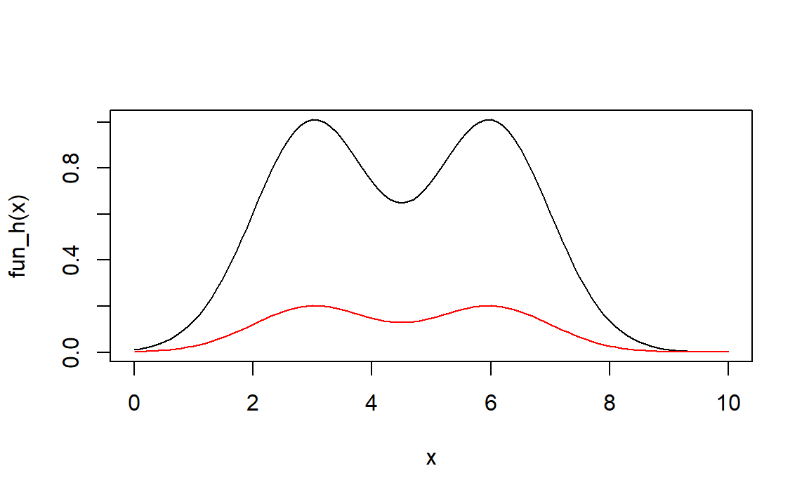

8 重要抽样法
8.1 笔记
对部分例子自编码实现
8.1.1 例12.1
用随机投点、平均值法、重要抽样法计算\(I=\int_0^1e^x\mathrm dx=e-1\)，比较它们的精度
随机投点法
以\([0,1]\times[0,e]\)作为矩形投点。
N <- 10000
x <- runif(N)
y <- runif(N,0,exp(1))
phat <- mean(y<=exp(x))
I1.est <- exp(1)*phat # 估计
I.true <- exp(1)-1 # 准确值
var1 <- exp(2)*phat*(1-phat) # 渐进方差
## 定义函数用于求各种误差
# 输入：估计值I1.est，准确值I.true，序列方差var1
I.err <- function(I1.est,I.true,var1,N){
ae1 <- abs(I1.est-I.true) # 绝对误差
re1 <- ae1/I.true # 相对误差
mre1 <- 0.8*sqrt(var1/N)/I1.est # MRE
I1 <- list(estimation = I1.est,AE = ae1,RE = re1,VAE = var1,MRE = mre1)
I1
}
I1 <- I.err(I1.est,I.true,var1,N)
I1
#> $estimation
#> [1] 1.710343
#>
#> $AE
#> [1] 0.007938902
#>
#> $RE
#> [1] 0.004620256
#>
#> $VAE
#> [1] 1.723921
#>
#> $MRE
#> [1] 0.0061413738.1.2 平均值法
N <- 10000
u <- exp(runif(N))
I2.est <- mean(u) # 估计
var2 <- var(u) # 渐进方差
I2 <- I.err(I2.est,I.true,var2,N)
I2
#> $estimation
#> [1] 1.705871
#>
#> $AE
#> [1] 0.01241085
#>
#> $RE
#> [1] 0.007222825
#>
#> $VAE
#> [1] 0.2395786
#>
#> $MRE
#> [1] 0.002295458.1.3 重要采样法
取提议分布为\(g(x)=\frac23(1+x)\)
N <- 10000
u <- runif(N)
x <- sqrt(1+3*u)-1
y <- 1.5*exp(x)/(1+x)
I3.est <- mean(y) # 估计
var3 <- var(y) # 渐进方差
I3 <- I.err(I3.est,I.true,var3,N)
I3
#> $estimation
#> [1] 1.717555
#>
#> $AE
#> [1] 0.0007270307
#>
#> $RE
#> [1] 0.0004231149
#>
#> $VAE
#> [1] 0.02692227
#>
#> $MRE
#> [1] 0.00076424968.1.4 比较
knitr::kable(rbind(I1,I2,I3))| estimation | AE | RE | VAE | MRE | |
|---|---|---|---|---|---|
| I1 | 1.71034292646643 | 0.00793890199261393 | 0.00462025603781979 | 1.72392117133341 | 0.00614137324650025 |
| I2 | 1.70587097871559 | 0.0124108497434559 | 0.00722282546314646 | 0.239578602089725 | 0.00229544990572984 |
| I3 | 1.71755479775617 | 0.000727030702871501 | 0.000423114934250048 | 0.0269222685573592 | 0.000764249584277972 |
可以看到，重要抽样法得到的\(I_3\)在精度上要高于前两种方法。
8.2 习题
习题1
- 理论推导：
\[ \begin{align} I=Eh(X)&=\int_{-\infty}^{+\infty}h(x)p(x)\mathrm dx\\ &= \int_{-\infty}^{+\infty}\left[\exp(-\frac12 (x-3)^2) + \exp(-\frac12 (x-6)^2)\right]\frac1{\sqrt{2\pi}}e^{\frac{x^2}2}\mathrm dx\\ &= \frac{e^{-9/4}}{\sqrt{2}}\int_{-\infty}^{+\infty}\mathcal N(\frac32,\frac12)\mathrm dx+\frac{e^{-9}}{\sqrt{2}}\int_{-\infty}^{+\infty}\mathcal N(3,\frac12)\mathrm dx\\ &= \frac{e^{-9/4}+e^{-9}}{\sqrt{2}} \end{align} \]
大约为：
I.true <- (exp(-9/4)+exp(-9))/sqrt(2);I.true
#> [1] 0.07461577- 平均值法：
N <- 1000
X <- rnorm(N)
fun_h <- function(x){
exp(-(x-3)^2/2)+exp(-(x-6)^2/2)
}
eta <- fun_h(X)
I1.est <- mean(eta)
var1 <- var(eta)
I1 <- I.err(I1.est,I.true,var1,N)
I1
#> $estimation
#> [1] 0.06876503
#>
#> $AE
#> [1] 0.005850737
#>
#> $RE
#> [1] 0.07841153
#>
#> $VAE
#> [1] 0.01951712
#>
#> $MRE
#> [1] 0.0513961- 重要抽样法：
不妨取试投密度函数为: \[ g(x)=\frac12\mathcal N(3,1)+\frac12\mathcal N(6,1) \]
由于： \[ Eh(X)=\int_{-\infty}^{+\infty}h(x)p(x)\mathrm dx=\int_{-\infty}^{+\infty}h(x)\frac{p(x)}{g(x)}g(x)\mathrm dx \]
所以一种重要性采样方法是，先从\(g(x)\)中分别采样\(N\)个样本\(X_i\)，求得其重要性权重为\(p(X_i)/g(X_i)\)，再对\(h(X_i)\)求加权均值即可。
N <- 1000
u <- runif(N)
X <- rnorm(N,3,1)
X[u>0.5] <- X[u>0.5]+3 # N(6,1)
fun_g <- function(x){
0.5*dnorm(x,3,1)+0.5*dnorm(x,6,1)
}
W <- dnorm(X)/fun_g(X) # 重要性权重
eta <- W*fun_h(X)
I2.est <- mean(eta)
var2 <- var(eta)
I2 <- I.err(I2.est,I.true,var2,N)
I2
#> $estimation
#> [1] 0.06912794
#>
#> $AE
#> [1] 0.005487829
#>
#> $RE
#> [1] 0.07354784
#>
#> $VAE
#> [1] 0.0402366
#>
#> $MRE
#> [1] 0.07340861看一下试投密度函数跟\(h(x)\)的匹配度：
curve(fun_h,0,10)
curve(fun_g,0,10,add = TRUE,col="red")
两种方法的误差比较：
knitr::kable(rbind(I1,I2))| estimation | AE | RE | VAE | MRE | |
|---|---|---|---|---|---|
| I1 | 0.0687650335104724 | 0.00585073681836018 | 0.0784115314038294 | 0.0195171153540842 | 0.0513960972874723 |
| I2 | 0.0691279414866747 | 0.0054878288421579 | 0.073547841400993 | 0.0402365959364118 | 0.0734086062178863 |
习题2
- 每轮生成\(N\)个随机数，生成\(n\)轮：
# 估计概率
N <- 10^6
n <- 100
X <- matrix(rnorm(N*n),n,N)>4.5
m <- apply(X,1,mean)
m <- mean(m);m
#> [1] 3.58e-06估计概率大概是\(3.58\times 10^{-6}\)
fun <- function(x) match(TRUE,x);
ma <- apply(X,1,fun)
ma <- mean(ma,na.rm = TRUE);ma
#> [1] 283180.7平均\(2.831807\times 10^{5}\)个样本点中才能有一个样本点满足要求。
- 此时的试投密度函数实际上是：
\[ g(x) = e^{-(x-4.5)}, \qquad x>4.5 \]
N <- 1000
# 生成g(x)样本
X <- rexp(N,1)+4.5
eta <- dnorm(X)/exp(-X+4.5)
I.est <- mean(eta)
I.true <- pnorm(4.5,lower.tail = FALSE)
var <- var(eta)
I <- I.err(I.est,I.true,var,N)
I
#> $estimation
#> [1] 3.536576e-06
#>
#> $AE
#> [1] 1.389028e-07
#>
#> $RE
#> [1] 0.04088175
#>
#> $VAE
#> [1] 2.06534e-11
#>
#> $MRE
#> [1] 0.03250893效率提高太大了。
习题3
略。